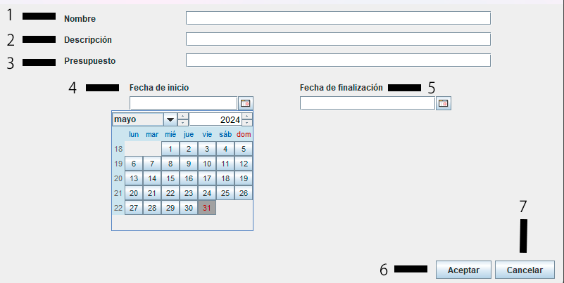

Añadir proyecto
En la ventana de añadir proyecto encontrarás diferentes campos de texto como los de la siguiente imagen:

1.- Indica el nombre del proyecto.
2.- Una breve descripción de lo que irá el proyecto.
3.- Máximo presupuesto (monetario, ej: 50000,50€) que se le dedicará a dicho proyecto.
4.- Fecha de inicio del proyecto.
5.- Fecha de finalización del proyecto (no hay porque añadirla en esta ventana).
6.- Botón para dar de alta el proyecto, antes de dar de alta comprobará si todos los campos han sido insertados e informará en caso de algún error, así mismo también informará en caso de que el alta se haga con éxito.
7.- Botón para cancelar el alta, lo que hará es limpiar todo el formulario al salir de esta ventana.